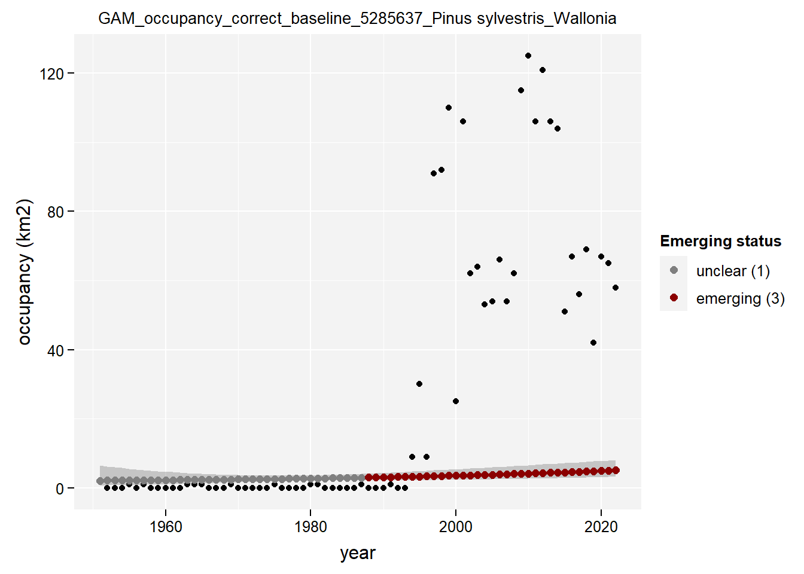

This document describes the modelling to assess the emerging status of alien species.
Load libraries:
library(tidyverse) # To do data science## Warning: package 'tidyverse' was built under R version 4.3.3## Warning: package 'ggplot2' was built under R version 4.3.3library(tidyselect) # To help tidyverse functions## Warning: package 'tidyselect' was built under R version 4.3.3library(tidylog) # To provide feedback on dplyr functions
library(rgbif) # To get information from GBIF
library(lubridate) # To work with dates
library(here) # To find files
library(trias)
library(INBOtheme) # To load graphic INBO themeWe read the time series data, output of preprocessing pipeline:
df_ts <- read_tsv(
file = here::here("data", "interim", "df_timeseries.tsv"),
na = ""
)Columns pa_obs and pa_cobs indicate the
presence (1) or absence (0) of the specific taxon and any other taxa
within same class respectively.
Preview:
# Get a taxon
taxon <-
df_ts$taxonKey[10]
# Preview
df_ts %>%
tidylog::filter(
taxonKey == taxon,
year %in% c(2016, 2017),
eea_cell_code == "1kmE3924N3102"
)Retrieve scientific names which will be useful to better discuss the results.
spec_names <- read_tsv(
file = here::here("data", "interim", "timeseries_taxonomic_info.tsv"),
na = ""
) %>%
tidylog::select(taxonKey, canonicalName) %>%
tidylog::filter(taxonKey %in% df_ts$taxonKey)Add column isBelgium to the time series data to simplify
the code while running the modelling for both Belgium and its
regions:
df_ts$isBelgium <- TRUEDefine function to lump geographic information for Belgium, its regions and protected areas:
filter_compact_time_series <- function(df, col_to_filter) {
df %>%
tidylog::filter(!!sym(col_to_filter) == TRUE) %>%
tidylog::group_by(taxonKey, year, classKey) %>%
tidylog::summarise(
obs = sum(obs),
cobs = sum(cobs),
ncells = sum(pa_obs),
c_ncells = sum(pa_cobs)
) %>%
tidylog::ungroup()
}Apply the function to the time series data:
colnames_to_filter <- c(
"isBelgium",
"isFlanders",
"isWallonia",
"isBrussels",
"natura2000"
)
df_ts_compact <- purrr::map(
colnames_to_filter,
function(x) filter_compact_time_series(df = df_ts, col_to_filter = x)
) %>%
purrr::set_names(colnames_to_filter)We have now a compact version of the time series data for:
names(df_ts_compact)## [1] "isBelgium" "isFlanders" "isWallonia" "isBrussels" "natura2000"Previews:
df_ts_compact %>% head()## $isBelgium
## # A tibble: 46,592 × 7
## taxonKey year classKey obs cobs ncells c_ncells
## <dbl> <dbl> <dbl> <dbl> <dbl> <dbl> <dbl>
## 1 1003567 2014 139 1 0 1 0
## 2 1003567 2015 139 0 0 0 0
## 3 1003567 2016 139 0 0 0 0
## 4 1003567 2017 139 0 0 0 0
## 5 1003567 2018 139 3 0 2 0
## 6 1003567 2019 139 0 0 0 0
## 7 1003567 2020 139 0 0 0 0
## 8 1003567 2021 139 0 0 0 0
## 9 1003567 2022 139 0 0 0 0
## 10 1003567 2023 139 0 0 0 0
## # ℹ 46,582 more rows
##
## $isFlanders
## # A tibble: 45,073 × 7
## taxonKey year classKey obs cobs ncells c_ncells
## <dbl> <dbl> <dbl> <dbl> <dbl> <dbl> <dbl>
## 1 1003567 2014 139 1 0 1 0
## 2 1003567 2015 139 0 0 0 0
## 3 1003567 2016 139 0 0 0 0
## 4 1003567 2017 139 0 0 0 0
## 5 1003567 2018 139 3 0 2 0
## 6 1003567 2019 139 0 0 0 0
## 7 1003567 2020 139 0 0 0 0
## 8 1003567 2021 139 0 0 0 0
## 9 1003567 2022 139 0 0 0 0
## 10 1003567 2023 139 0 0 0 0
## # ℹ 45,063 more rows
##
## $isWallonia
## # A tibble: 32,230 × 7
## taxonKey year classKey obs cobs ncells c_ncells
## <dbl> <dbl> <dbl> <dbl> <dbl> <dbl> <dbl>
## 1 1016841 2020 361 1 0 1 0
## 2 1016841 2021 361 0 0 0 0
## 3 1016841 2022 361 0 0 0 0
## 4 1016841 2023 361 0 0 0 0
## 5 1016841 2024 361 0 0 0 0
## 6 1017419 2009 361 0 0 0 0
## 7 1017419 2010 361 0 0 0 0
## 8 1017419 2011 361 0 0 0 0
## 9 1017419 2012 361 0 0 0 0
## 10 1017419 2013 361 0 0 0 0
## # ℹ 32,220 more rows
##
## $isBrussels
## # A tibble: 21,654 × 7
## taxonKey year classKey obs cobs ncells c_ncells
## <dbl> <dbl> <dbl> <dbl> <dbl> <dbl> <dbl>
## 1 1017419 2009 361 0 0 0 0
## 2 1017419 2010 361 0 0 0 0
## 3 1017419 2011 361 0 0 0 0
## 4 1017419 2012 361 0 0 0 0
## 5 1017419 2013 361 0 0 0 0
## 6 1017419 2014 361 0 0 0 0
## 7 1017419 2015 361 0 0 0 0
## 8 1017419 2016 361 0 0 0 0
## 9 1017419 2017 361 1 0 1 0
## 10 1017419 2018 361 0 0 0 0
## # ℹ 21,644 more rows
##
## $natura2000
## # A tibble: 39,525 × 7
## taxonKey year classKey obs cobs ncells c_ncells
## <dbl> <dbl> <dbl> <dbl> <dbl> <dbl> <dbl>
## 1 1003567 2014 139 1 0 1 0
## 2 1003567 2015 139 0 0 0 0
## 3 1003567 2016 139 0 0 0 0
## 4 1003567 2017 139 0 0 0 0
## 5 1003567 2018 139 3 0 2 0
## 6 1003567 2019 139 0 0 0 0
## 7 1003567 2020 139 0 0 0 0
## 8 1003567 2021 139 0 0 0 0
## 9 1003567 2022 139 0 0 0 0
## 10 1003567 2023 139 0 0 0 0
## # ℹ 39,515 more rowsAdd canonical names:
df_ts_compact <- purrr::map(df_ts_compact, function(df) {
tidylog::left_join(df, spec_names, by = "taxonKey")
})In this section we evaluate the emerging status by applying a decision rule strategy or, where possible, a statistical model called GAM (Generalized Additive Models). For each evaluation year (see below) the output of both models is one of the following emerging status codes:
3: emerging2: potentially emerging1: unclear0: not emergingSee documentation of trias::apply_decision_rules
and trias::apply_gam()
for more information.
We define the time window (in years) we want to assess the emerging status:
# Last evaluation year
last_year <- lubridate::year(Sys.Date()) - 2
# First evaluation year
first_year <- last_year - 2
# Evaluation years
evaluation_years <- seq(first_year, last_year)
evaluation_years## [1] 2020 2021 2022We remove recent data due to publishing delay. Underestimation of the number of observations would sensibly affect the GAM output.
df_ts_compact <- purrr::map(
df_ts_compact,
function(df) df %>% tidylog::filter(year <= last_year)
)Taxa appearing after the very first evalution year should be removed as no trend can be assesed for them. See analysis of appearing and reappearing taxa.
# Define function to remove appearing taxa from the data for modelling
remove_appearing_taxa <- function(df, min_eval_year) {
df %>%
# Filter to include only years before min(eval_years)
tidylog::filter(year < min_eval_year) %>%
# Group by taxonKey
tidylog::group_by(taxonKey) %>%
# Arrange by year within each group to ensure we get the first occurrence
dplyr::arrange(year, .by_group = TRUE) %>%
# Filter to keep only the first year where obs > 0 for each taxon
tidylog::slice(which(obs > 0)[1]) %>%
# Keep only taxonKey
tidylog::select(taxonKey) %>%
# Ungroup to remove grouping
tidylog::ungroup() %>%
# Add data from the original data frame
tidylog::left_join(df, by = "taxonKey")
}
# Apply the function to Belgium, its regions and the protected areas
df_ts_compact <- purrr::map(df_ts_compact,
remove_appearing_taxa,
min_eval_year = min(evaluation_years)
)
spec_names <-
spec_names %>%
tidylog::filter(
taxonKey %in%
purrr::pluck(
purrr::map_dfr(df_ts_compact, function(x) {
x %>% dplyr::distinct(taxonKey)
}), "taxonKey"
)
)We define and apply some decision rules for occupancy and
observations in all Belgium and in protected areas using function
apply_decision_rules() from project package
trias.
We apply function apply_decision_rules() to the
observations:
# Define wrap function to apply decision rules for each evaluation year
apply_decision_rules_for_ev_years <- function(df, eval_years, y_var) {
purrr::map_dfr(
eval_years,
function(year) {
trias::apply_decision_rules(
df = df,
y_var = y_var,
eval_year = year
)
}
)
}
# Apply the wrap function to BE, regions and protected areas for observations
em_decision_rules_occs <- purrr::map(
df_ts_compact,
apply_decision_rules_for_ev_years,
eval_years = evaluation_years,
y_var = "obs"
)Preview from Belgium:
em_decision_rules_occs %>%
purrr::pluck("isBelgium") %>%
tidylog::slice_head(n = 10)Preview from the regions:
regions <- c("isFlanders", "isWallonia", "isBrussels")
purrr::map(
regions,
function(x) {
em_decision_rules_occs %>%
purrr::pluck(x) %>%
tidylog::slice_head(n = 10)
}
)## [[1]]
## # A tibble: 10 × 7
## taxonKey year em_status dr_1 dr_2 dr_3 dr_4
## <dbl> <int> <dbl> <lgl> <lgl> <lgl> <lgl>
## 1 1003567 2020 1 FALSE FALSE FALSE FALSE
## 2 1008955 2020 0 FALSE FALSE TRUE FALSE
## 3 1014565 2020 1 FALSE FALSE FALSE FALSE
## 4 1017419 2020 3 FALSE TRUE FALSE TRUE
## 5 1031394 2020 1 FALSE FALSE FALSE FALSE
## 6 1031400 2020 1 FALSE FALSE FALSE FALSE
## 7 1031684 2020 3 FALSE TRUE FALSE TRUE
## 8 1031737 2020 1 TRUE FALSE FALSE FALSE
## 9 1031742 2020 1 FALSE FALSE FALSE FALSE
## 10 1043717 2020 1 FALSE FALSE FALSE FALSE
##
## [[2]]
## # A tibble: 10 × 7
## taxonKey year em_status dr_1 dr_2 dr_3 dr_4
## <dbl> <int> <dbl> <lgl> <lgl> <lgl> <lgl>
## 1 1017419 2020 1 TRUE FALSE FALSE FALSE
## 2 1031394 2020 1 TRUE FALSE FALSE FALSE
## 3 1031400 2020 1 TRUE FALSE FALSE FALSE
## 4 1031684 2020 2 FALSE TRUE FALSE FALSE
## 5 1031742 2020 1 FALSE FALSE FALSE FALSE
## 6 1043717 2020 1 TRUE FALSE FALSE FALSE
## 7 1045323 2020 0 TRUE FALSE TRUE FALSE
## 8 1047536 2020 3 FALSE TRUE FALSE TRUE
## 9 1119292 2020 1 TRUE FALSE FALSE FALSE
## 10 1309600 2020 2 FALSE TRUE FALSE FALSE
##
## [[3]]
## # A tibble: 10 × 7
## taxonKey year em_status dr_1 dr_2 dr_3 dr_4
## <dbl> <int> <dbl> <lgl> <lgl> <lgl> <lgl>
## 1 1017419 2020 1 TRUE FALSE FALSE FALSE
## 2 1031394 2020 1 FALSE FALSE FALSE FALSE
## 3 1031400 2020 0 TRUE FALSE TRUE FALSE
## 4 1031684 2020 0 TRUE FALSE TRUE FALSE
## 5 1031742 2020 1 TRUE FALSE FALSE FALSE
## 6 1047536 2020 3 FALSE TRUE FALSE TRUE
## 7 1095946 2020 1 FALSE FALSE FALSE FALSE
## 8 1152186 2020 2 FALSE TRUE FALSE FALSE
## 9 1309600 2020 1 FALSE FALSE FALSE FALSE
## 10 1309606 2020 1 FALSE FALSE FALSE FALSEPreview from protected areas:
em_decision_rules_occs %>%
purrr::pluck("natura2000") %>%
tidylog::slice_head(n = 10)We apply function trias::apply_decision_rules() to
occupancy:
# Apply the wrap function to BE, regions and protected areas for occupancy
em_decision_rules_occupancy <- purrr::map(
df_ts_compact,
apply_decision_rules_for_ev_years,
eval_years = evaluation_years,
y_var = "ncells"
)Preview from Belgium:
em_decision_rules_occupancy %>%
purrr::pluck("isBelgium") %>%
tidylog::slice_head(n = 10)Preview from the regions:
regions <- c("isFlanders", "isWallonia", "isBrussels")
purrr::map(
regions,
function(x) {
em_decision_rules_occupancy %>%
purrr::pluck(x) %>%
tidylog::slice_head(n = 10)
}
)## [[1]]
## # A tibble: 10 × 7
## taxonKey year em_status dr_1 dr_2 dr_3 dr_4
## <dbl> <int> <dbl> <lgl> <lgl> <lgl> <lgl>
## 1 1003567 2020 1 FALSE FALSE FALSE FALSE
## 2 1008955 2020 0 FALSE FALSE TRUE FALSE
## 3 1014565 2020 1 FALSE FALSE FALSE FALSE
## 4 1017419 2020 3 FALSE TRUE FALSE TRUE
## 5 1031394 2020 1 FALSE FALSE FALSE FALSE
## 6 1031400 2020 1 FALSE FALSE FALSE FALSE
## 7 1031684 2020 3 FALSE TRUE FALSE TRUE
## 8 1031737 2020 1 TRUE FALSE FALSE FALSE
## 9 1031742 2020 1 FALSE FALSE FALSE FALSE
## 10 1043717 2020 1 FALSE FALSE FALSE FALSE
##
## [[2]]
## # A tibble: 10 × 7
## taxonKey year em_status dr_1 dr_2 dr_3 dr_4
## <dbl> <int> <dbl> <lgl> <lgl> <lgl> <lgl>
## 1 1017419 2020 1 TRUE FALSE FALSE FALSE
## 2 1031394 2020 1 TRUE FALSE FALSE FALSE
## 3 1031400 2020 1 TRUE FALSE FALSE FALSE
## 4 1031684 2020 2 FALSE TRUE FALSE FALSE
## 5 1031742 2020 1 FALSE FALSE FALSE FALSE
## 6 1043717 2020 1 TRUE FALSE FALSE FALSE
## 7 1045323 2020 0 TRUE FALSE TRUE FALSE
## 8 1047536 2020 3 FALSE TRUE FALSE TRUE
## 9 1119292 2020 1 TRUE FALSE FALSE FALSE
## 10 1309600 2020 2 FALSE TRUE FALSE FALSE
##
## [[3]]
## # A tibble: 10 × 7
## taxonKey year em_status dr_1 dr_2 dr_3 dr_4
## <dbl> <int> <dbl> <lgl> <lgl> <lgl> <lgl>
## 1 1017419 2020 1 TRUE FALSE FALSE FALSE
## 2 1031394 2020 1 FALSE FALSE FALSE FALSE
## 3 1031400 2020 0 TRUE FALSE TRUE FALSE
## 4 1031684 2020 0 TRUE FALSE TRUE FALSE
## 5 1031742 2020 1 TRUE FALSE FALSE FALSE
## 6 1047536 2020 3 FALSE TRUE FALSE TRUE
## 7 1095946 2020 1 FALSE FALSE FALSE FALSE
## 8 1152186 2020 3 FALSE TRUE FALSE TRUE
## 9 1309600 2020 1 FALSE FALSE FALSE FALSE
## 10 1309606 2020 1 FALSE FALSE FALSE FALSEPreview from protected areas:
em_decision_rules_occupancy %>%
purrr::pluck("natura2000") %>%
tidylog::slice_head(n = 10)We apply GAM to observations and occupancy in all Belgium, its
regions and the protected areas using function
trias::apply_gam() from project package
trias.
Plots are saved in ./data/output/GAM_outputs
directory:
dir_name_basic <- here::here("data", "output", "GAM_outputs")We also define the plot dimensions in pixels:
plot_dimensions <- list(width = 2800, height = 1500)We define also a wrap-up function,
apply_gam_for_eval_years to apply GAM for each evaluation
year and taxon:
# Define wrap function to apply GAM for every time series (Belgium, its regions
# and protected areas)
apply_gam_for_eval_years <- function(df,
region,
eval_years,
y_var,
indicator,
baseline_var,
root_dir,
y_label,
w,
h) {
# Remove "is" from "isBrussels", "isFlanders", "isWallonia" to create the
# subdirectory to be added to the basic directory
region <- stringr::str_remove(region, "^is")
dir_name <- here::here(dir_name_basic, region)
# Check if directory exists before creating
if (!dir.exists(dir_name)) {
dir.create(dir_name)
}
taxon_keys <- unique(df$taxonKey)
taxon_names <- unique(df$canonicalName)
message(paste0("Applying GAM. Variable: ", y_var, "; region: ", region, "."))
gam_occs <- map2(
taxon_keys, taxon_names,
function(t, n) {
df_key <- df %>%
dplyr::filter(taxonKey == t)
class_key <- unique(df_key[["classKey"]])
# Use covariate only if taxon belongs to a class (classKey is available)
if (!is.na(class_key)) {
results_gam <- trias::apply_gam(
df = df_key,
y_var = y_var,
taxonKey = "taxonKey",
eval_years = eval_years,
type_indicator = indicator,
baseline_var = baseline_var,
taxon_key = t,
name = n,
df_title = region,
dir_name = dir_name,
y_label = y_label,
saveplot = TRUE,
width = w,
height = h
)
} else {
# If taxon doesn't belong to any class (classKey is not available), use
# the default GAM model without covariate
results_gam <- trias::apply_gam(
df = df_key,
y_var = y_var,
taxonKey = "taxonKey",
eval_years = eval_years,
type_indicator = indicator,
taxon_key = t,
name = n,
df_title = region,
dir_name = dir_name,
y_label = y_label,
saveplot = TRUE,
width = w,
height = h
)
}
return(results_gam)
}
)
names(gam_occs) <- taxon_keys
gam_occs
}We apply GAM modelling by using the wrap-up function defined above to observations in Belgium, its regions and protected areas. This step can take long.
# Apply `apply_gam_for_eval_years` to observations:
gam_occs <- purrr::imap(
df_ts_compact,
apply_gam_for_eval_years,
eval_years = evaluation_years,
y_var = "obs",
indicator = "observations",
baseline_var = "cobs",
root_dir = dir_name_basic,
y_label = "number of observations",
w = plot_dimensions$width,
h = plot_dimensions$height
)Show results for Pinus sylvestris:
taxon_example <- "5285637"
purrr::map(gam_occs, function(x) {
x %>%
purrr::pluck(taxon_example) %>%
purrr::pluck("plot")
})## $isBelgium##
## $isFlanders##
## $isWallonia##
## $isBrussels##
## $natura2000We apply GAM modelling by using the wrap-up function defined above to occupancy in Belgium, its regions and protected areas. This step can take long.
gam_occupancy <- purrr::imap(
df_ts_compact,
apply_gam_for_eval_years,
eval_years = evaluation_years,
y_var = "ncells",
indicator = "occupancy",
baseline_var = "c_ncells",
root_dir = dir_name_basic,
y_label = "occupancy (km2)",
w = plot_dimensions$width,
h = plot_dimensions$height
)Show results for Pinus Sylvestris:
purrr::map(gam_occupancy, function(x) {
x %>%
purrr::pluck(taxon_example) %>%
purrr::pluck("plot")
})## $isBelgium##
## $isFlanders##
## $isWallonia
##
## $isBrussels##
## $natura2000Save emerging status based on decision rules:
# Define function to save the results for Belgium, its regions and protected
# areas
save_decision_rules_output <- function(df, region, indicator) {
# Remove "is" from "isBrussels", "isFlanders", "isWallonia" for a better filename
region <- stringr::str_remove(region, "^is")
readr::write_tsv(
x = df,
file = here::here(
"data", "output",
"decision_rules_outputs",
paste0("output_decision_rules_", indicator, "_", region, ".tsv")
),
na = ""
)
}
# Apply function to save decision rules outputs applied to occurrences
purrr::iwalk(em_decision_rules_occs, function(df, region) {
save_decision_rules_output(df, region, indicator = "occs")
})
# Apply function to save decision rules outputs applied to occupancy
purrr::iwalk(em_decision_rules_occupancy, function(df, region) {
save_decision_rules_output(df, region, indicator = "occupancy")
})Save complete outputs and summaries:
# Define function to save GAM model outputs and summaries for Belgium, its
# regions and protected areas
save_gam_output <- function(gam_results,
region,
indicator) {
# Remove "is" from "isBrussels", "isFlanders", "isWallonia" for a better filename
region <- stringr::str_remove(region, "^is")
# Save outputs
readr::write_tsv(
# Merge the outputs of all taxa as a data.frame for saving
purrr::map_dfr(
gam_results,
function(x) {
x$output
}
),
na = "",
file = here::here(
dir_name_basic,
paste0("output_GAM_", indicator, "_", region, ".tsv")
)
)
# Save summaries
readr::write_tsv(
# Merge the summaries of all taxa as a data.frame for saving
purrr::map_dfr(
gam_results,
function(x) {
x$em_summary
}
),
na = "",
file = here::here(
dir_name_basic,
paste0("summary_GAM_", indicator, "_", region, ".tsv")
)
)
}
# Apply function to save GAM outputs applied to ocurrences
purrr::iwalk(gam_occs, function(df, region) {
save_gam_output(df, region, indicator = "occs")
})
# Apply function to save decision rules outputs applied to occupancy
purrr::iwalk(gam_occupancy, function(df, region) {
save_gam_output(df, region, indicator = "occupancy")
})We create a zip file with all generated GAM plots:
folder_path <- here::here("data", "output", "GAM_outputs")
# Get relative paths of PNG files
png_files <- list.files(folder_path,
pattern = "\\.png$",
recursive = TRUE
)
# Change working directory temporarily
old_wd <- getwd()
setwd(folder_path)
# Create zip file
zip(zipfile = "GAM_plots.zip", files = png_files)
# Restore working directory
setwd(old_wd)
# Move zip file to the desired location (if needed)
file.rename(
file.path(folder_path, "GAM_plots.zip"),
here::here("data", "output", "GAM_outputs", "GAM_plots.zip")
)